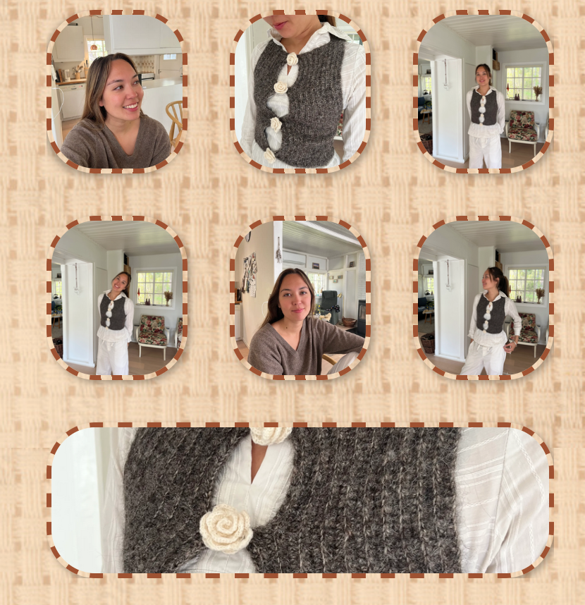

About the track
I dette forløb blev vi introduceret til videoredigering og fik arbejdet med programet Premiere pro,
hvor vi lagde ud med at skulle i par filme en person med passion og derefter enkeltvis producere en
video samt tilhørende site dvs. jeg lærte at lægge en video op på en hjemmeside samt storyboard.
Link til
Videosite
My Process
Jeg valgte af bruge creme/brunlige farver samt en tekstur baggrund som matchede med personens passion heraf hækling. Vi skulle vedhæfte videorne både via youtube-link og med video tagget derudoverhar jeg framet alle elementer med en stiplet linj i brun for at imitere sygninger

Vi skulle også tage billeder, som skulle præsenteres på hjemmesiden og der valgte jeg at bruge grid som også har den stiplede brune linje for at have et gennemgående tema. Vi skulle også behandle billederne.
